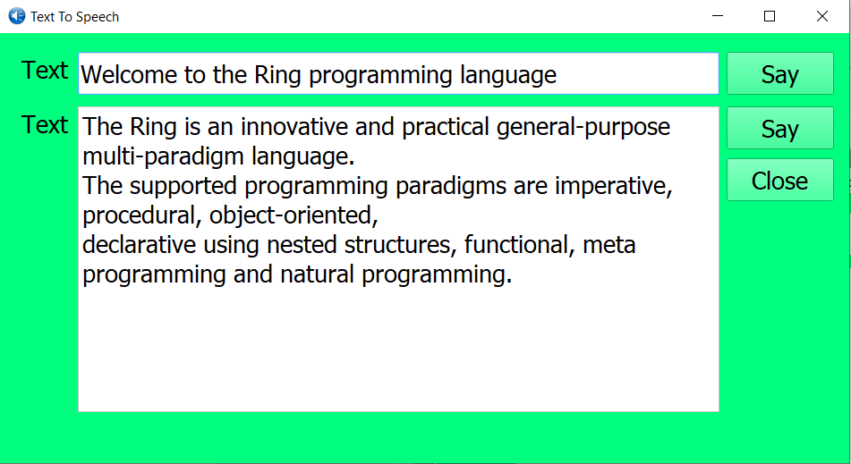

What is new in Ring 1.11?¶
In this chapter we will learn about the changes and new features in Ring 1.11 release.
List of changes and new features¶
Ring 1.11 comes with the next features!
- Sudoku Game
- Checkers Game
- Sokoban Game
- Maze Game
- Desktop Screen Shot Application
- Text To Speech Application
- StdLib - More Functions
- Better RingQt
- More Improvements
Sudoku Game¶
Fill a 9 x 9 grid with digits so that each column, each row, and each of the nine 3 x 3 subgrids that compose the grid contain all of the digits from 1 to 9.

Checkers Game¶
It plays the - Must Jump - version of Checkers, The International Rules
It handles various invalid moves, invalid jumps, and must jumps.
The squares are colored to reflect errors.
The Sqaures are colored to show source and destination of the move or jump.

Sokoban Game¶
A quick implementation for the Sokoban Game
Developed using Ring Game Engine for 2D Games in 2 hours (Less than 300 lines of code)

Maze Game¶
A quick implementation for the Maze Game
Developed using Ring Game Engine for 2D Games (Around 100 lines of code)
Also the game comes with a level designer (Developed in 10 minutes, 37 Lines of code)

Desktop Screen Shot Application¶

Text To Speech Application¶
StdLib - More Functions¶
The next functions are added to the StdLib
- IsListContainsItems(aParent,aChild)
- IsBetween(nNumber,nMin,nMax)
- TimeInfo(cInformation)
Example:
load "stdlibcore.ring"
? "Using the IsListContainsItems() function"
aList1 = "a":"z"
aList2 = [:h,:l,:p,:u]
? IsListContainsItems(aList1,aList2)
? "Using the IsBetween() function"
? isBetween(1,3,4)
? isBetween(4,1,6)
? "Using the TimeInfo() function"
? timeInfo(:date)
? timeInfo(:year)
? timeInfo(:time)
? timeInfo(:hour_12)
Output:
Using the IsListContainsItems() function
1
Using the IsBetween() function
0
1
Using the TimeInfo() function
05/24/19
2019
15:30:33
03
For more information about these functions, see the StdLib functions chapter.
Better RingQt¶
Building RingQt using Qt 5.12.3
RingQt for Android - project file is updated to include webview module when we have it
QString Class - New Methods
- compare()
- contains()
- indexOf()
- insert()
- isRightToLeft()
- remove()
- repeated()
- replace()
- startsWith()
- endsWith()
- toHtmlEscaped()
- clear()
- isnull()
- resize()
- fill()
QAxBase & QVariant - Better API
The next classes are added to RingQt
- QQuickView Class
- QPrintDialog Class
- QAxWidget2 Class
- QTextToSpeech Class
- QGraphicsView Class
More Improvements¶
- New Samples
- samples/other/UsingQt3D folder
- samples/other/ModuloTimesTableCircle folder
- samples/other/saveimage folder
- samples/other/UsingQML folder
- samples/other/myguicontrol.ring
- samples/other/qcalendarwidget.ring
- samples/other/qcalendarwidget2.ring
- samples/other/sudoku-KL02.ring
- samples/other/sudoku-KL02-longproblem.ring
- samples/other/zerobasedlist.ring
- ringlibs/gameengine/lesson17.ring (Using Buttons)
- Gold Magic 800 - More levels (44 Levels)
- Fifteen Puzzle Game 3D - Better Code (Animation Speed)
- Flappy Bird 3000 - change the Bird direction to be looking down when we have game over
- Ring Notepad - Keyboard shortcuts for the Dockable Windows Mode
- Ring Notepad - When displaying functions list, don’t avoid functions that contains the “_” character
- Ring Notepad - Output Window - Send Data - Better Code
- Ring Notepad - Find and Replace Window - Better Code
- RingPM - When updating a package - don’t reinstall the dependency again
- Ring Game Engine for 2D Games - Added : GE_FULLSCREEN, GE_SCREEN_W and GE_SCREEN_H
- Ring Game Engine for 2D Games - Added : name property to game objects
- Ring Game Engine for 2D Games - Added : find() method to game class (find an object by name)
- Ring Game Engine for 2D Games - Support oGame[:ObjectName] to access an object.
- FoxRing - Added: frCTOD() function
- Ring VM - Error codes for Ring Object File errors
- Ring VM - Eval() function - Better Code
- Ring VM - State Management - Better Code
- Ring VM - the “>” operator and operator overloading - Better Code
- Ring VM - Assignment and calling object methods - Better Code
- Ring API - Supporting RING_API_ISLIST() in C Extensions
- Ring Compiler - Supporting new lines after numbers and literals when writing conditions
- Ring Compiler - Supporting semi-colon (;) in the start of the line